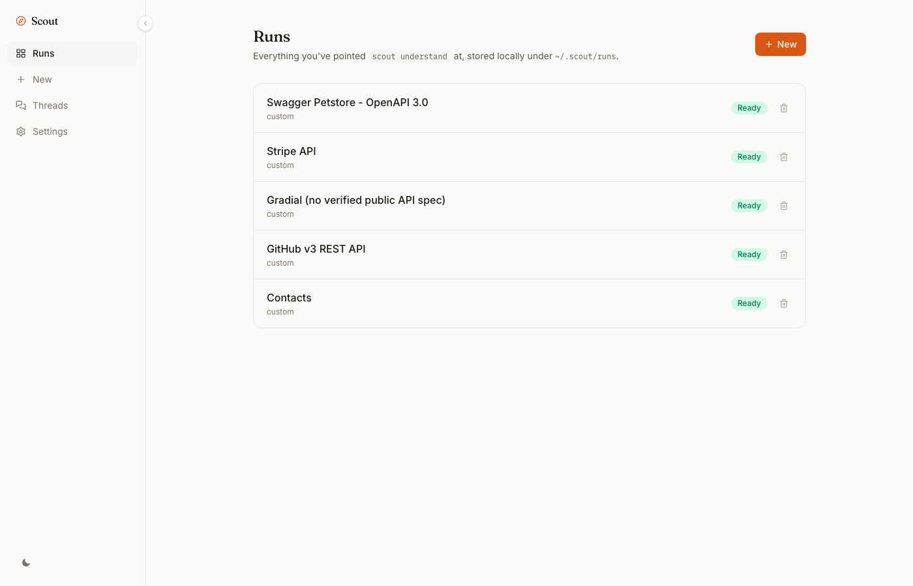
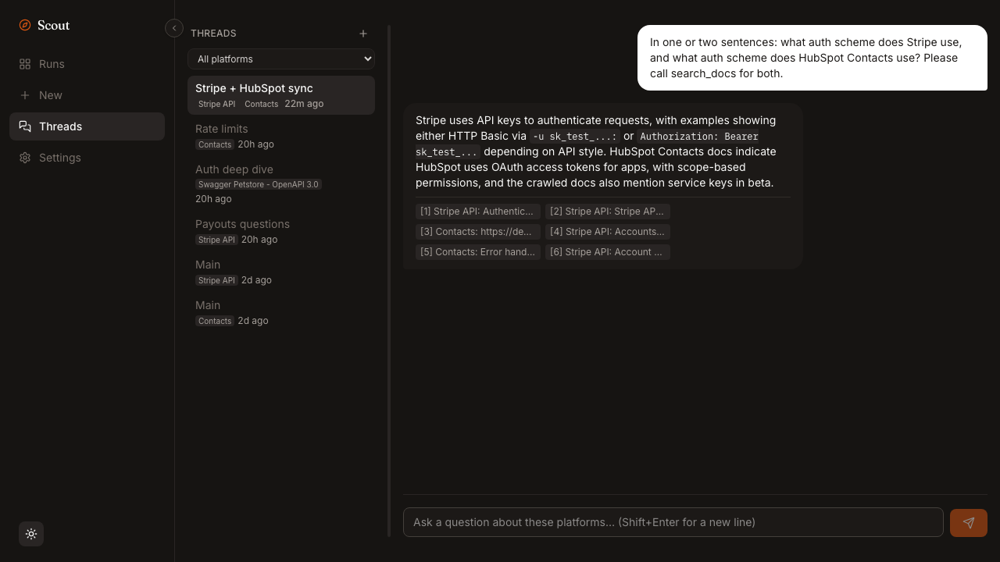
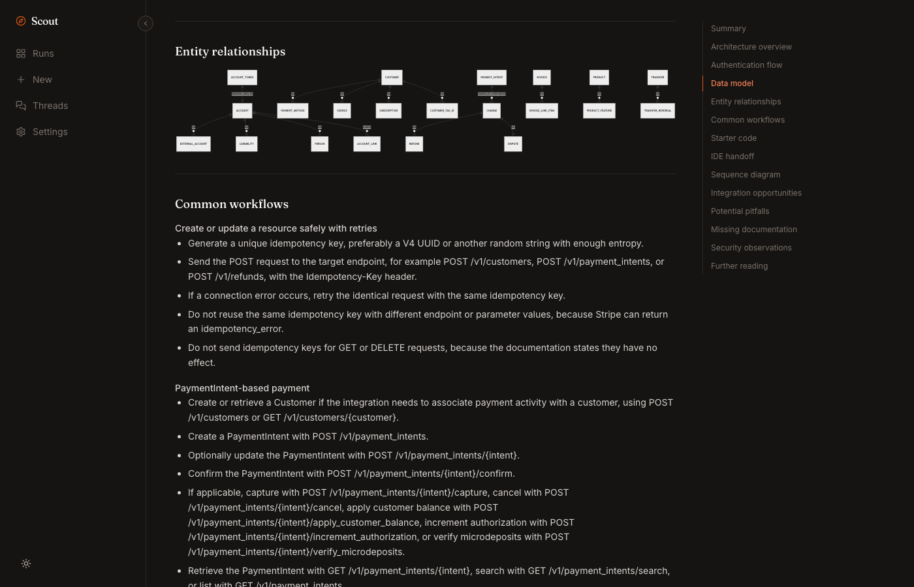
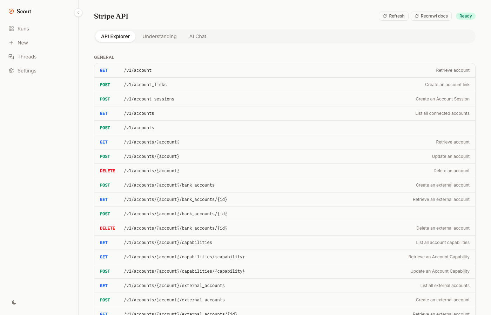
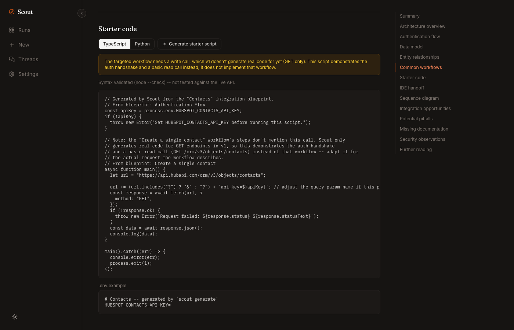
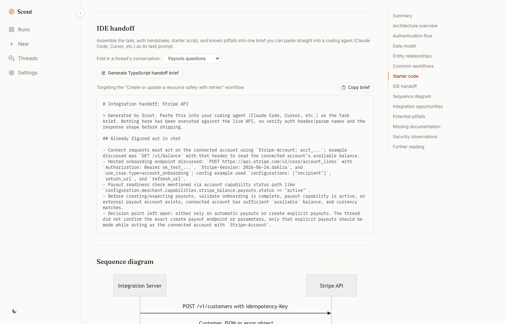

Understand any enterprise platform in minutes, not the first afternoon of a new integration.
Point Scout at a platform's OpenAPI spec and docs. Get a cited, browsable integration blueprint and a real threaded chat assistant, in a local web app. It also ships an equally capable CLI and MCP server, so any MCP-speaking coding agent (Claude Code, Cursor, Codex, Gemini CLI, and more) pulls the same grounded understanding straight into its own context.

The problem
Coding agents guess at API shapes. Scout gives them ground truth instead.
You open a platform's docs to build an integration. Forty tabs in, you still don't know how auth actually works, what the core objects are, or which of six similarly-named endpoints does what you need. You paste a docs URL into your coding agent and ask it to wire up the integration. It writes confident code against an endpoint that doesn't exist, because it's pattern-matching against every payments API it saw in training, not reading this platform's actual docs.
That gap, between what a coding agent assumes and what a platform's docs actually say, is where integrations break. Scout closes it. It reads the OpenAPI spec as ground truth for what the API can do, crawls the docs as ground truth for how it's meant to be used, and cross-checks one against the other. When something isn't evidenced in either, it says so instead of inventing it.
Who it's for
Built for the people who live in third-party APIs
Anyone integrating with a platform regularly, not just once, plus the people who manage and greenlight that work.
Forward Deployed Engineers
Standing up a bespoke integration on-site, fast. Get a grounded understanding of the customer's platform before you write a line of code.
Integration & platform engineers
Third-party APIs are the job, not a side quest. Keep a living, cited understanding of every platform your team integrates with, refreshed as docs change.
Solutions architects
Evaluate a vendor's real API surface before a build/buy decision, not just their marketing docs, with an honest read on what's actually supported.
Engineering managers & team leads
Onboard a new hire onto a platform the team already knows, without handing them a stale wiki page and a Slack thread to dig through.
CTOs & technical decision-makers
A fast, honest read on whether a platform's API can actually do what the vendor claims, before your team commits to it.
DevEx & platform teams
Give every engineer on the team the same grounded, cited platform knowledge instead of scattered tribal notes and outdated internal wikis.
What you get
One import, a complete integration picture
Everything below runs identically on the web app, the CLI, and MCP - same functions, three surfaces.
A full, cited understanding
Architecture, auth flow, data model, entity relationships as a real diagram, common workflows, pitfalls, and security observations - generated from the spec and docs you pointed it at, not a generic template.
Never a fabricated citation
Every answer is tagged with where it came from: a doc excerpt with a real similarity score, a live web result with a URL, or the model's own knowledge, flagged unverified.
Real, syntax-checked starter code
The auth handshake plus one working call - never a stub dressed up as working code. Unsupported auth schemes get an honest, labeled stub with a stated reason instead.
Real threads, not one chat box
Claude/ChatGPT-style: multiple named conversations per platform, or grounded across several platforms at once, each citation tagged with which one it came from.
A paste-ready IDE handoff
Task, auth, starter code, .env.example, and real pitfalls in one Markdown brief - optionally folding an LLM-distilled summary of a chat thread in too.
MCP for your coding agent
Twelve tools give any MCP-speaking coding agent (Claude Code, Cursor, Codex CLI, Gemini CLI, and more) the exact same grounded understanding, mid-session, no copy-pasting docs into a chat window.
See it in action
A real interface, not a proof of concept

Dark Light



Three surfaces, one pipeline
Web app, CLI, or MCP - never a separate implementation
Every tool here is a thin wrapper around the same agent/store functions, so there's nothing to fall out of sync.
scout serve
Opens at http://127.0.0.1:4207, no login, nothing leaves your machine.
- Runs, New, Threads, Settings, sidebar collapsible to icon-only
- API Explorer with every endpoint, method-color-coded
- Understanding page with table of contents + entity diagram
scout <command>
Every capability the web app has, scriptable from a shell.
understand,chat,generate,handoffdiff,refresh,watch,exportdocs add/list/rm,connectors,config
scout mcp
A standard stdio MCP server - works with any MCP client, 12 tools, added once.
- Claude Code, Claude Desktop, Cursor
- Codex CLI, Gemini CLI, and more
- Same understanding, pulled mid-task, no copy-paste
Real examples
Verified end-to-end against real, public specs
| Platform | Command | What Scout found |
|---|---|---|
| Stripe | scout understand https://raw.githubusercontent.com/stripe/openapi/master/openapi/spec3.json --docs https://docs.stripe.com |
Auth is HTTP Basic, not Bearer - real templates don't cover it yet, so scout generate correctly stubs instead of guessing. |
| HubSpot (Contacts) | scout understand <hubspot-openapi-url> --docs https://developers.hubspot.com/docs/api/crm/contacts |
Real, syntax-validated TypeScript for the api_key_query auth scheme, plus 25+ real pitfalls pulled straight from the docs. |
| GitHub (REST API) | scout understand <github-openapi-url> --docs https://docs.github.com/en/rest |
Correctly identified none-scheme public endpoints vs. token-gated ones, and generated an honest stub rather than assuming a default. |
More platforms, full transcripts, and the honesty behavior explained: read the examples in the docs →
How it compares
Not a chat wrapper, not a spec viewer
Where Scout sits next to the tools you'd otherwise reach for.
| Capability | Scout | Generic LLM chat | Swagger / OpenAPI viewer | Reading docs manually |
|---|---|---|---|---|
| Cited, verifiable answers | Yes | No | N/A | You verify |
| Cross-checks spec against real docs | Yes | No | No | Manually |
| Real, syntax-checked starter code | Yes | Unverified | No | No |
| MCP tool for coding agents | Yes | No | No | No |
| Detects when docs drift | Yes | No | No | No |
| Local-first, no telemetry | Yes | Cloud | Depends on host | Yes |
| Cost beyond your own API key | None | Subscription | None | None |
"Generic LLM chat" means ChatGPT/Claude/etc. with a docs URL pasted in, no tool access to re-search or cross-check.
Two minutes to a grounded blueprint
From install to a cited chat, in one sitting
Install & add a provider
Node 22+, no account, no telemetry. One LLM provider for synthesis and chat.
npm install -g @dotapk7/scoutcli # or: anthropic, azure-openai, openrouter, openai-compatible (Ollama, LM Studio, vLLM) scout config llm add openai --api-key sk-...
Point it at a platform
The OpenAPI/Swagger spec (URL or file), and optionally doc pages to crawl for grounded chat.
scout understand https://petstore3.swagger.io/api/v3/openapi.json --docs https://example.com/docs
Open the web app
Runs, New, Threads, API Explorer, Settings - everything lives at 127.0.0.1:4207.
scout serve
Wire it into your coding agent
One command, and your coding agent pulls real, cited platform knowledge mid-task instead of guessing.
claude mcp add scout -- scout mcp
Open source, local-first, no hidden costs beyond your own API key.
MIT licensed. Star it, fork it, or open a PR - connectors are just JSON.